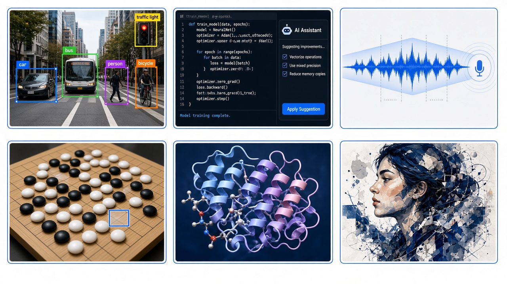
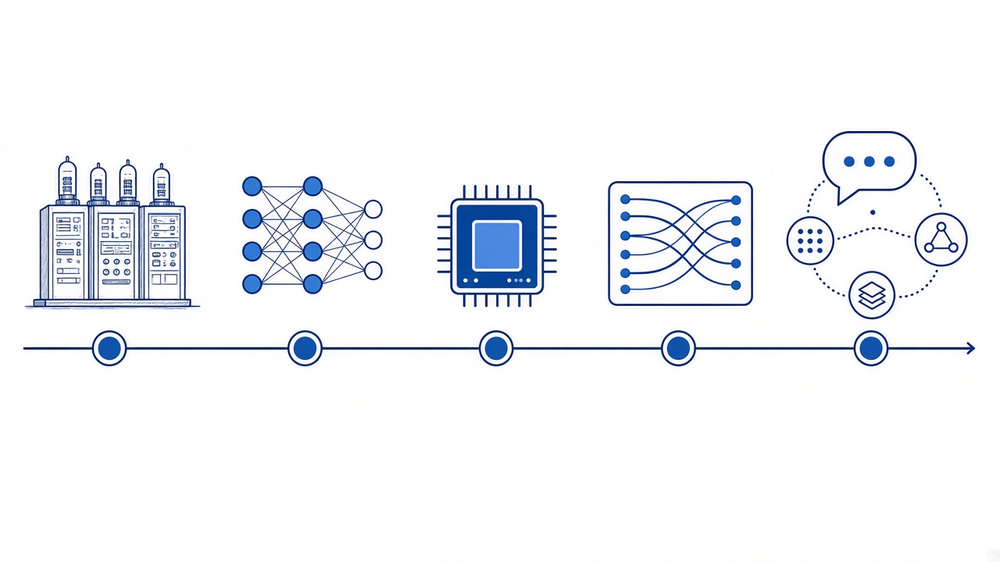
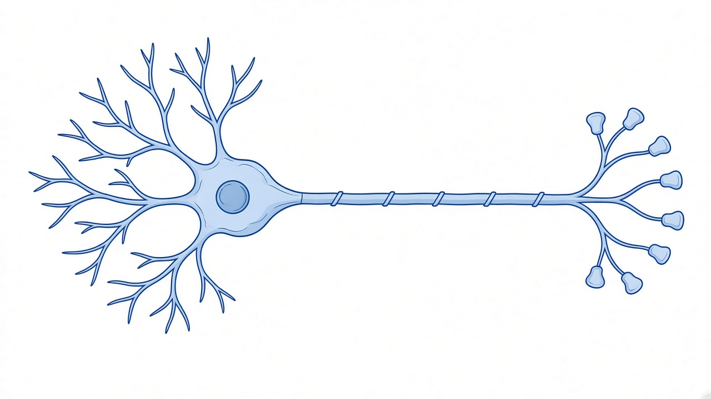
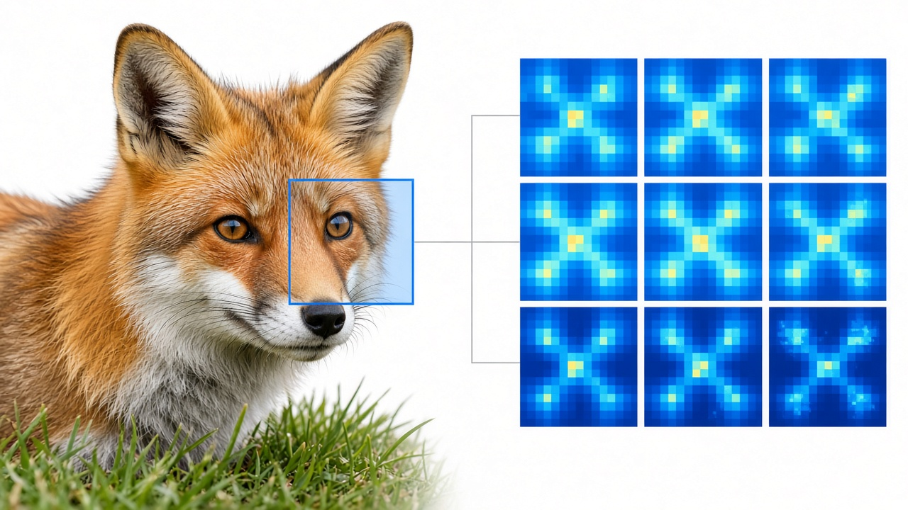
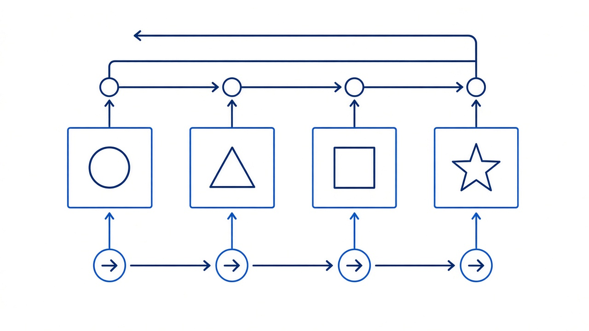
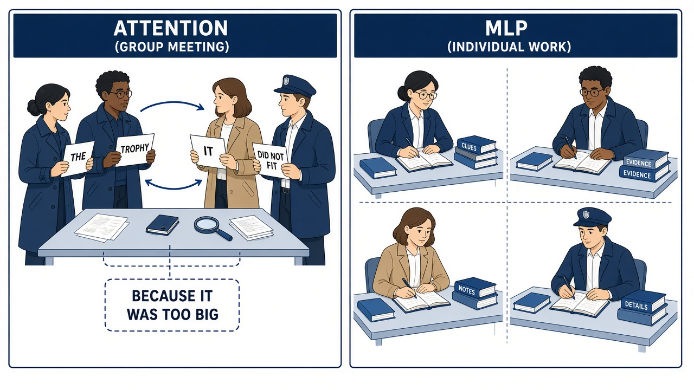

ML · Attention · RL
Roadmap: how models learn from data, how attention reads context, then how agents learn from rewards. Kernels come after this section.
What ML can do

VISION
LANGUAGE
SPEECH
GAMES
SCIENCE
GENERATIVE
Deep learning powers perception, language, speech, game play, and scientific models. Same recipe: learn parameters from data, then run them at scale. Not magic — pattern recognition with enough compute.
A short history

Idea is old; scale is new. Perceptrons → backprop → CNNs/RNNs → ImageNet-era deep learning → Transformers (2017) → today’s large language and multimodal models. Hardware and data made the jump possible.
Inspired by neurons

dendrites
soma
axon
spike
Dendrites collect signals → soma integrates → axon spikes. Artificial units copy the recipe: weighted inputs → sum + bias → activation. Inspiration from neuroscience — not a full brain model.
Input → Model → Guess
Features x go in; a parameterized function fθ produces a prediction ŷ. Parameters θ (weights, bias) are the knobs training will change. Same idea for text, images, or numbers.
Guess → Loss → Update
Supervised loop: forward pass → loss comparing ŷ to target y → gradients ∇θ via backprop → optimizer updates θ. One step is tiny; training is this loop over many batches.
Gradient descent · backprop
Gradient descent walks downhill on the loss: move parameters opposite ∇θ L, scaled by learning rate η. Backprop is how we get those gradients efficiently — apply the chain rule backward through every layer after one forward pass. Backpropagation subtracts the gradient (the derivative of the loss) from the current weights and biases during the gradient descent update step.
Pattern, not memory
Overfitting memorizes noise and looks great on train data. Generalization means the pattern still works on held-out points. That is why we never judge a model only by training loss.
Train · Val · Test
Split once, up front. Train fits parameters. Validation chooses hyperparameters and when to stop — without touching test. Test is a sealed exam: one final score. Tuning on test = leakage.
Layers of weights
Stack units into layers. Each edge is a weight; each unit applies an activation. Depth and width grow capacity. Training moves those weights. This schematic is tiny next to real models.
CNN

IMAGE
filter
FEATURE MAPS
local patterns
CNNs slide small filters over an image. Each filter detects a local pattern; stacked layers build edges → parts → objects. Great for vision; less natural for long text.
RNN

x₁…x₄
hidden state h
RECURRENCE
RNNs read a sequence step by step and keep a hidden state. Good idea for text and time series — but long dependencies are hard: early info tends to vanish as steps pile up.
LSTM
LSTMs add forget / input / output gates around a cell state, so useful signals can travel farther in time. Still sequential — one token after another — which is slow and hard to parallelize. Transformers take a different route next.
Transformers
A transformer is a neural net built for sequences like text. Attention lets each token pull useful information from other tokens in the context.
Text → Tokens → Vectors
A tokenizer splits text into tokens. Each token becomes a vector of numbers, plus position info so order matters. The bars are schematic numbers — not literal meaning.
Next token
Given the tokens so far, the model scores possible next tokens, picks one, appends it, and repeats. Generation is this loop — not one big “write the whole answer” step.
Attention
For token “it”, attention builds a query, compares it to earlier keys, and mixes their values by weight. Thicker link = stronger weight. Future tokens are masked so the model can’t cheat.
Many heads
Several attention heads run in parallel, each with its own projections — different views of the same context. Outputs are combined. Neat human labels for each head are not guaranteed.
Block: Attn + MLP
One transformer block: attention mixes across tokens, then an MLP transforms each token. Residual (+) paths keep the incoming signal. Stack many blocks to deepen the model.
Attn · MLP — detectives

ATTENTION
group meeting
MLP
solo desk work
“it” ← “trophy”
each token alone
Each detective owns one word. Attention is the group meeting: “it” asks who it refers to; “trophy” shares notes. MLP is solo desk work: each detective updates their own notepad with books and experience — no talking. The block repeats: meeting → desk → meeting → desk.
Reinforcement learning
RL trains a decision-maker through interaction. Instead of a labeled answer every time, the agent gets rewards from what happens after it acts.
State · Action · Reward
Observe state → choose action (policy) → environment returns new state + reward. Learning updates the policy so better outcomes become more likely.
Delayed credit
Reward often arrives late. The learner must guess which earlier actions helped. That credit-assignment problem — delayed or noisy rewards — is why RL is hard. PPO does not solve this by itself.
Assigning credit
Ways people tackle credit: discount later vs earlier actions (γ), wait for the full return G, or use a value guess so each step gets a denser signal (advantage). That is separate from PPO’s clip.
Explore · Exploit
Exploit = pick what currently looks best. Explore = try uncertain options to learn. Too little exploration misses better actions; too much wastes tries.
Policy π
The policy is the agent’s rule: given state s, pick action a (or a distribution over actions). Training changes the policy — not by copying labels, but by making rewarded behavior more probable.
Episode · Return
An episode is one full run: states, actions, and rewards until the game ends. The return G adds those rewards (sometimes discounted). RL aims to raise expected return — not just the next reward.
Actor · Critic
Yes — both are neural nets. The actor net is the policy π (pick an action). The critic net estimates how good the current state is, V(s). Their gap — advantage — tells the actor whether that action was better or worse than expected. PPO usually trains this pair.
PPO
PPO trains a policy in a loop: collect rollouts, score how good each action looked, then update π. The special part is the next slide — how far that update is allowed to go.
PPO · clip
PPO’s main trick is not credit assignment — it’s trust. Measure how much the new π differs from the old one; if the ratio leaves a small band around 1, clip it. Big noisy steps that would wreck a working policy get blocked.
Three learning signals
Left: supervised (input → label). Middle: language-model style (tokens → next token). Right: RL (action → reward). Same model family can use different training signals.
Next: kernels
We covered what the model computes. Next: how GPU kernels tile that work so the hardware can run it efficiently.